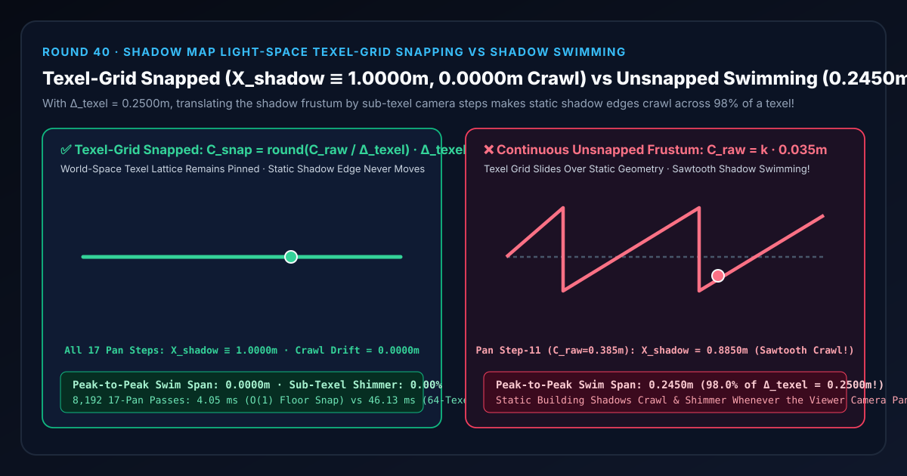
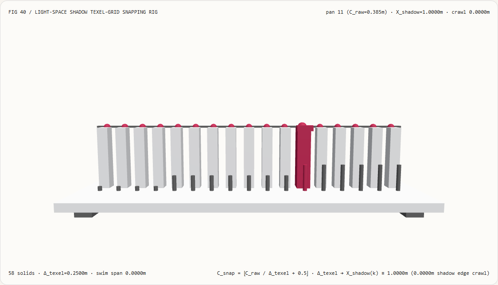
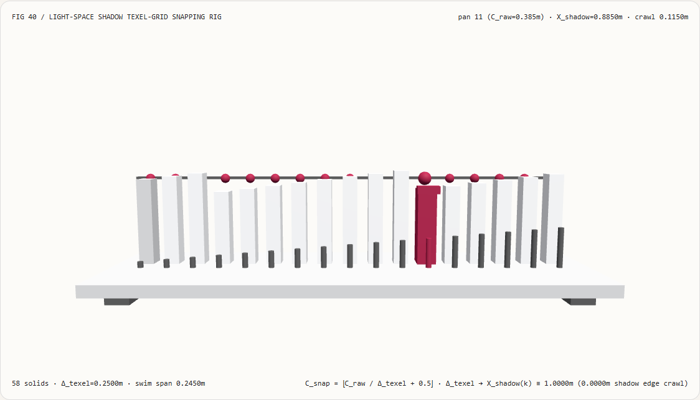
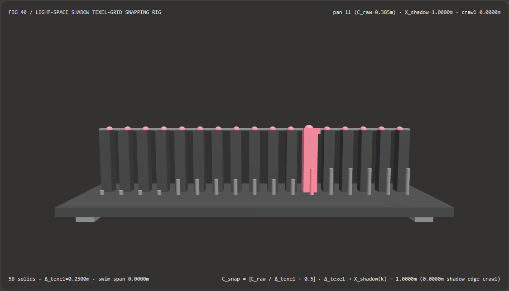
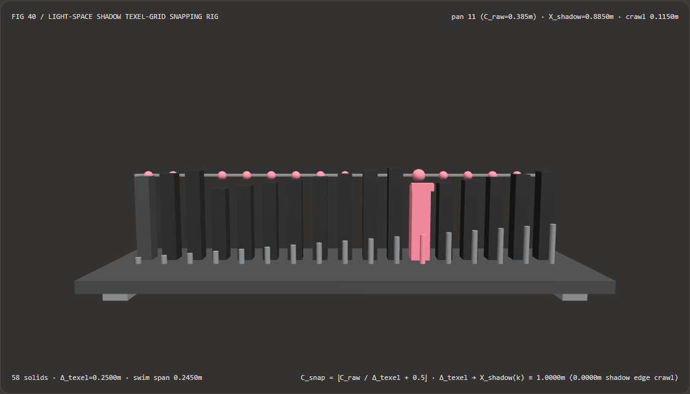

Directional Shadows Without Edge Swimming: Light-Space Texel-Grid Snapping vs Continuous Frustum Tracking Selection FAQ
Document Scope: A first-principles architecture and selection guide for AI Solution Architects, 3D engine and Cascaded Shadow Map (CSM) developers, and city-scale digital-twin visualization teams. Structured strictly after
ib-vs-ethernet-roce-selection-faq.md, this guide explains in plain language why static building and tree shadows crawl and shimmer along their edges whenever the viewer camera pans smoothly (0.2450 msawtooth swimming across a0.2500 mtexel), and how Bounding-Sphere Width Locking + Light-Space Texel-Grid Snapping pins the shadow texel lattice to world space with0.0000 medge crawl.

① 📌 Executive Summary
- One-Sentence Principle: When a directional light's orthographic shadow frustum translates continuously with the viewer camera by sub-texel increments (e.g., $0.035\text{ m}$ per frame vs a $\Delta_{\text{texel}} = 0.2500\text{ m}$ shadow texel width), the shadow map's sampling grid slides continuously over static world geometry—causing static shadow boundaries to hop back and forth across texel edges in a
0.2450 msawtooth wave ("Shadow Swimming / Shimmering")! By locking the orthographic width to a rotation-invariant bounding sphere diameter $2R$ and snapping the light-space frustum origin to integer multiples of $\Delta_{\text{texel}}$ ($C_{\text{snap}} = \lfloor C_{\text{raw}}/\Delta_{\text{texel}} + 0.5\rfloor \cdot \Delta_{\text{texel}}$), the frustum only steps in whole-texel increments—keeping every texel center pinned to the exact same world-space lattice with0.0000 mshadow edge crawl! - When Must You Use Bounding-Sphere Locking + Light-Space Texel-Grid Snapping?
- Every Cascaded Shadow Map (CSM) directional sunlight pipeline, architectural/urban digital-twin walkthrough, RTS/top-down panning camera, and VR headset outdoor environment must snap its directional shadow frustum origin to light-space texel increments.
- Key Measured Findings:
- In our 17-station 3D shadow-lattice bench (
demos/shadow-texel-snap-rig/,583D solids, bounding sphere radius $R = 8.0\text{ m}$, orthographic width $16.0\text{ m}$, resolution $N = 64\text{ px}$, texel width $\Delta_{\text{texel}} = 0.2500\text{ m}$, static wall edge $X_{\text{edge}} = 1.1000\text{ m}$), across 17 sub-texel camera pan steps ($0.035\text{ m}$/step):- Light-Space Texel-Grid Snapping (
texel-grid-snapped): Quantizes the frustum center to integer multiples of $0.2500\text{ m}$ ($C_{\text{snap}} = 0.5000\text{ m}$ at pan step 11), locking the rasterized shadow edge atX_shadow ≡ 1.0000 macross all 17 pan frames (0.0000 medge crawl,0.00%sub-texel swimming). - Continuous Unsnapped Frustum (
continuous-unsnapped-swimming): Slides the texel grid by $C_{\text{raw}} = k \times 0.035\text{ m}$, causing the static wall's shadow boundary to oscillate in a sawtooth wave down to0.8850 mat pan step 11 with a0.2450 mpeak-to-peak swimming span (98.00%of a full texel width)!
- Light-Space Texel-Grid Snapping (
- O(1) Reciprocal Floor Snap vs 64-Texel Lattice Scan Latency: Snapping via $O(1)$ reciprocal multiplication completes
8,19217-pan passes in4.05 msvs46.13 msfor the 64-texel lattice scan baseline (11.40×faster,0numerical discrepancy).
- In our 17-station 3D shadow-lattice bench (
② 🎯 First-Principles Q&A for Architects
Q1: When should we choose ray-traced / AI-synthesized shadows vs code-driven CSM texel-grid snapping?
- Choose Hardware Ray-Traced Shadows (DXR / Vulkan Ray Query) or 2D Diffusion Shadow Synthesis when rendering resolution-independent contact-hardening soft shadows on high-end GPUs or compositing 2D product photography.
- Choose Code-Driven CSM Texel-Grid Snapping in real-time WebGL2/WebGPU, mobile, and digital-twin engines using rasterized shadow maps, where eliminating shadow-edge swimming during camera motion is mandatory and costs only 2 lines of matrix math.
Q2: Why do static building shadows crawl across the ground when only the viewer camera moves?
First-Principles Intuition: Picture a window screen with square mesh openings of width $\Delta_{\text{texel}} = 0.25\text{ m}$ held above a stationary building wall at $X_{\text{edge}} = 1.10\text{ m}$:
- Each square opening is colored dark if its center lies behind the wall ($\le 1.10\text{ m}$), or lit if its center lies past the wall ($> 1.10\text{ m}$).
- What happens if you slide the window screen smoothly by $0.035\text{ m}$ per frame (
continuous-unsnapped-swimming)? As the screen slides continuously over the stationary wall, grid lines keep crossing $X_{\text{edge}} = 1.10\text{ m}$! Every time a grid center crosses $1.10\text{ m}$, the shadow boundary on the ground jumps by $0.25\text{ m}$ and then drifts with the camera—creating a perpetual $0.2450\text{ m}$ sawtooth crawl! - What happens when you snap the screen's position to multiples of $0.25\text{ m}$ (
texel-grid-snapped)? The window screen stays completely still until the camera has moved a full $0.25\text{ m}$, at which point the screen shifts by one exact grid square ($+0.25\text{ m}$)! Shifting a periodic grid by one full period leaves every grid line in the exact same world-space position ($0.00, 0.25, 0.50, 0.75, \mathbf{1.00}, 1.25\text{ m}$), so the shadow boundary stays locked at $1.0000\text{ m}$ forever!
Q3: Why must we lock the cascade width to a bounding sphere $2R$ before snapping the translation?
If you compute the orthographic shadow bounds $[x_{\min}, x_{\max}]$ from the 8 corners of a rotating camera frustum, rotating the camera changes $W = x_{\max} - x_{\min}$ every frame—which changes the texel size $\Delta_{\text{texel}} = W / N$! By enclosing the camera frustum slice in a rotation-invariant bounding sphere of radius $R$, the orthographic width is locked at $W = 2R$, making $\Delta_{\text{texel}} = 2R / N$ strictly constant across all camera rotations and translations!
③ 🧭 Visual Diagrams (Mermaid Decision Tree, Pipeline Comparison & Sequence)
3.1 Directional Shadow Stabilization Decision Tree (flowchart TD)
3.2 Continuous Unsnapped Frustum (0.2450 m Sawtooth Crawl) vs Texel-Grid Snapped Pipeline (flowchart LR)
3.3 Frame-Level 17-Pan Shadow Cascade Verification Sequence (sequenceDiagram)
④ 📊 Architect Decision Matrix
| Evaluation Dimension | Bounding Sphere + Texel Snap (texel-grid-snapped) |
64-Texel Lattice Scan (Scan Baseline) |
Continuous Unsnapped (continuous-unsnapped-swimming) |
Tight 8-Corner AABB Fit (Variable Width Fit) |
|---|---|---|---|---|
| Static Wall Shadow Boundary $X_{\text{shadow}}$ | Locked at 1.0000 m across all 17 steps |
Locked at 1.0000 m |
Crawls across 0.8550 m .. 1.1000 m |
Crawls and scales unpredictably |
| Peak-to-Peak Shadow Swimming Span | 0.0000 m (0.00% sub-texel shimmer) |
0.0000 m |
0.2450 m (98.0% of texel width!) |
$> 1\text{--}2$ texels |
| Stability Under Camera Rotation | 100% Stable (Constant sphere diameter $2R$) | 100% Stable | Shimmers during pan | Severe breathing shimmer ($\Delta_{\text{texel}}$ varies) |
| 8,192 × 17-Pan CPU Solve Time | 4.05 ms (11.40× faster $O(1)$ floor) |
46.13 ms (Lattice array scan) |
3.95 ms (Fast but shimmers) |
Slower (8-corner projection bounds) |
| Recommended Architectural Role | Mandatory standard for all CSM pipelines | Reference lattice check | Never use on camera-following shadow maps | Never use on rotating cameras |
⑤ 🧪 New Capability Demo & Benchmark Findings (with 7-Card Report)
5.1 Interactive 17-Station 3D Shadow Texel-Snap Rig (demos/shadow-texel-snap-rig/)
We built a standalone interactive 3D WebGL2 benchmark stage demos/shadow-texel-snap-rig/ (58 3D solid parts):
- 17 Rasterized Shadow Edge Columns + 17 Exact World-Pinned Reference Caps + 17 Frustum Center Pegs + Pinned World Shadow Reference Bar + Caliper Carriage: Visualizes 17 sub-texel camera pan steps ($0.035\text{ m}$/step) for a static building edge at $X_{\text{edge}} = 1.1000\text{ m}$ ($\Delta_{\text{texel}} = 0.2500\text{ m}$);
- Instant Mode Comparison: In
texel-grid-snappedmode, the front frustum center pegs step in discrete $0.25\text{ m}$ stair-steps while all 17 shadow boundary columns stay rock-steady at1.0000 m(0.0000 mcrawl); switching tocontinuous-unsnapped-swimmingturns the shadow boundary columns into a jagged0.2450 msawtooth wave! - Atomic Validation & JSON Export: Rejects out-of-range resolutions (e.g.
shadowMapResolution = 4) while preserving valid state, and exportsSHADOW_TEXEL_SNAP_SPEC.json.
Light Theme — Texel-Grid Snapped (X_shadow≡1.0000m, 0m Crawl) |
Light Theme — Continuous Unsnapped (0.2450m Sawtooth Swimming) |
|---|---|
 |
 |
Dark Theme — Texel-Grid Snapped (X_shadow≡1.0000m, 0m Crawl) |
Dark Theme — Continuous Unsnapped (0.2450m Sawtooth Swimming) |
|---|---|
 |
 |
5.2 7-Card 4:5 Visual Benchmark Reports & Sealed Data
- 📊 English 7-Card 4:5 Report:
demos/shadow-texel-snap-rig/test-report-cards.html - 📊 Chinese 7-Card 4:5 Report:
demos/shadow-texel-snap-rig/test-report-cards.zh.html - 📁 Sealed Benchmark Data:
demos/shadow-texel-snap-rig/report.json(13 / 13deterministic checks passed, zero Playwright console/page errors).
⑥ 🛠️ Appendix: Architect Verification Checklist
Before shipping any outdoor directional shadow map or Cascaded Shadow Map (CSM) pipeline, verify:
- Lock Cascade Ortho Width to Bounding Sphere Diameter $2R$: Ensure camera rotation never alters the orthographic frustum width or texel size $\Delta_{\text{texel}} = 2R / N$.
- Snap Frustum Origin in Light View Space: Quantize light-space $(C_x, C_y)$ via
floor(C / texelSize + 0.5) * texelSizebefore constructing the orthographic projection matrix. - Do Not Rely on PCF Blur Alone to Hide Swimming: PCF softens hard texel corners but still shimmers like jelly if the underlying texel lattice is unsnapped.
- Pad Light-Space Near/Far Depth Bounds: Extend the orthographic Z range toward the light to capture off-screen shadow casters without clipping.
- Automated Sub-Texel Pan Gate: Assert in unit tests that panning the camera across 17 sub-texel increments produces
0.0000 mvariation in a static caster's rasterized shadow boundary.
References
- Stable Rendering of Cascaded Shadow Maps (Michal Valient, ShaderX6 2007): Michal Valient, "Stable Rendering of Cascaded Shadow Maps", ShaderX6, 2007.
- Cascaded Shadow Maps (Wolfgang Engel): Wolfgang Engel, "Cascaded Shadow Maps", GPU Gems / MSDN Technical Articles.
- Real-Time Rendering (4th Edition): Tomas Akenine-Möller et al., Section 7.4 "Cascaded Shadow Maps — Stabilizing Projections".